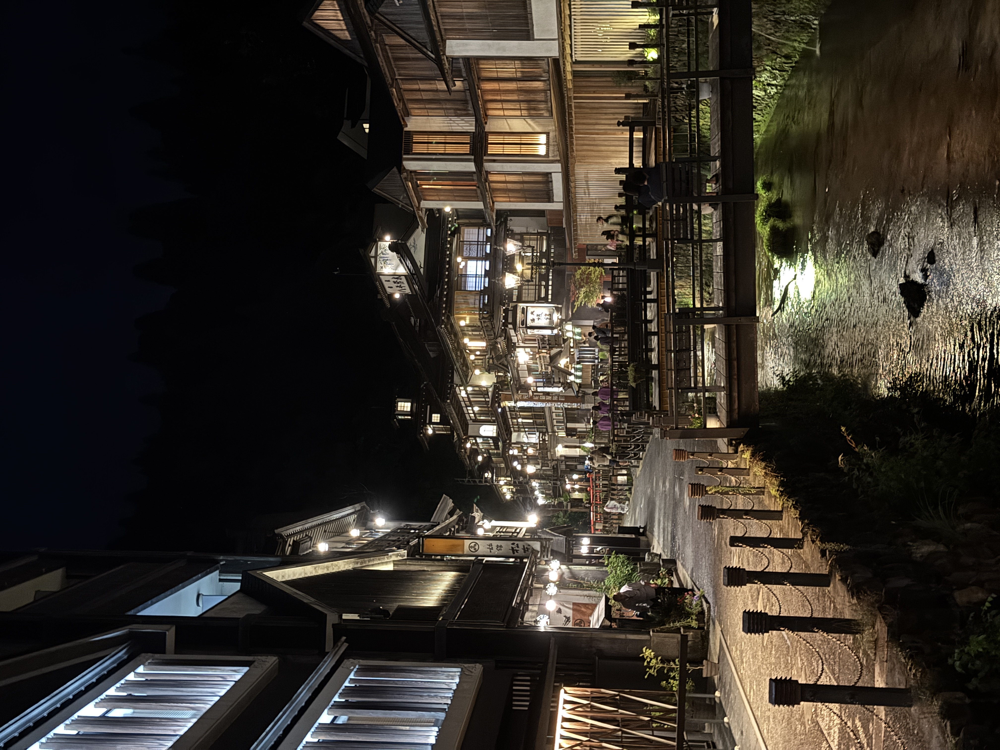
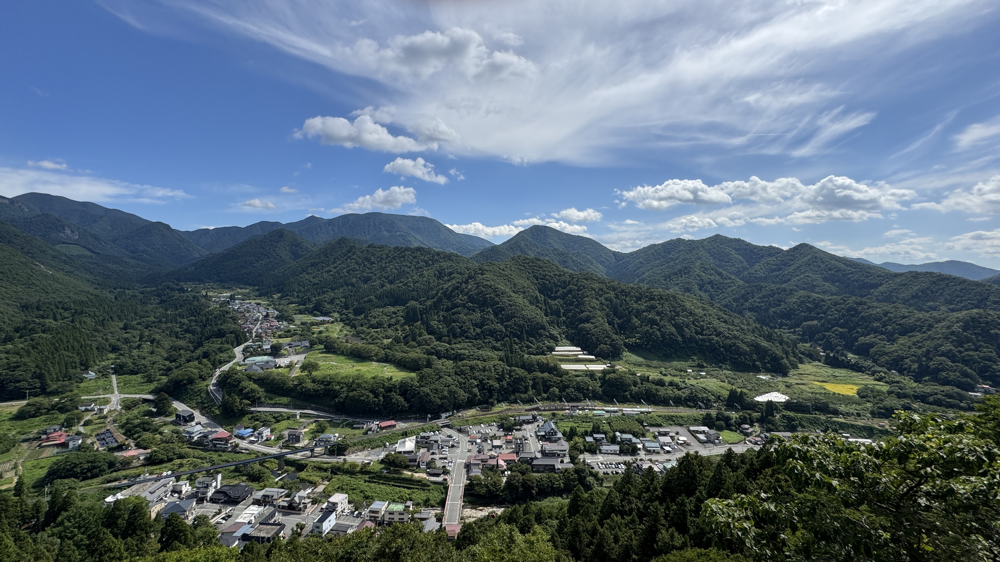
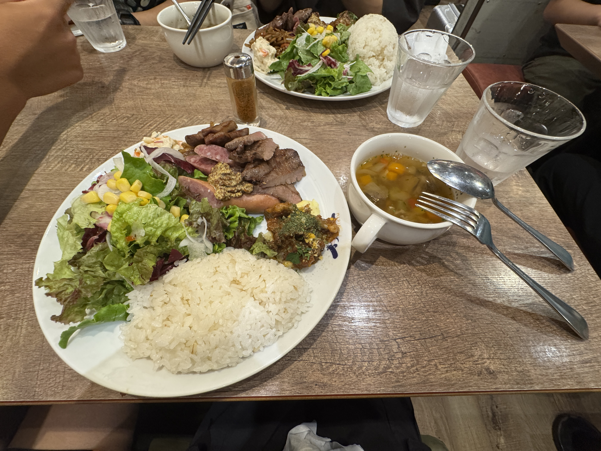

2025年9月6日から3日間、宮城県・山形県にかけて
高校の友人と旅行に行ってきたので、印象深かった写真を残します。

1日目・松島と福浦橋
朱塗りが特徴の長い橋。空が晴れてたらもっと眺め良かっただろうな。

1日目(泊)→2日目・銀山温泉
ここ、写真と同じかそれ以上に綺麗です。人生で1回は必ず行ったほうがいい。
硫黄の匂いも合わさり、和を感じるとても趣深い場所でした。

2日目・山寺
山の上に寺があります。階段きついです。
展望台から見える、ゆっくりとカーブを描くローカル線（仙山線）の風景が良かったです。

3日目（夕食）
想定より早く仙台駅に帰ってきてしまい、最後はラウワンで遊びました。
夕食は仙台牛を使った肉盛り合わせ。美味しかった。